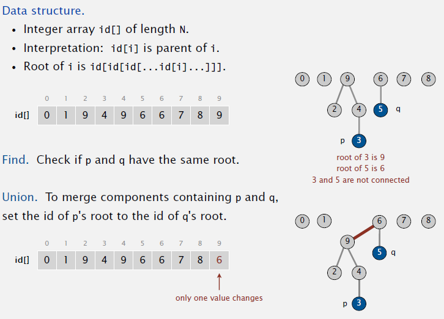

In a dynamic connectivity problem we try to check if two points in a set are connected. An algorithm to represent this problem is the quickFind algorithm for which we have two operation, connected() and union() that respectively check if two points in a set are connected and if not we connect them. Giving the following class to model the problem describe the model (constructor and methods) and give considerations about the time and memory complexity. public class QuickFindUF { private int[] id; public QuickFindUF(int N) { id = new int[N]; for (int i = 0; i < N; i++) id[i] = i; } public boolean connected(int p, int q) { return id[p] == id[q]; } public void union(int p, int q) { int pid = id[p]; int qid = id[q]; for (int i = 0; i < id.length; i++) if (id[i] == pid) id[i] = qid; } } |
With this class we model the problem using an array for which the indexes represent the point and the values of the array represent the connection. Two indexes are connected if their value is equal (connected(int p, int q) method. The problem here is in the union(int p, int q) method for which we have to cycle the entire array in order to union all the points. It takes O(n^2) array accesses to process a sequence of N union commands on N objects. |
What is the quickUnion ? What are the characteristics of this algorithm? |
QuickUnion is an algorithm in order to check the dynamic connectivity of a set of items. It is described as a collection of trees (aka forest) for which each value represent the root of the tree.  The problem is that this algorithm is too slow. The tree can get tall and the find operation would be too expensive (could be N array accesses in the worst case) |
Suppose that in a quick-union data structure on 10 elements that the id[] array is i 0 1 2 3 4 5 6 7 8 9 ------------------------------------- id[i] 0 9 6 5 4 2 6 1 0 5 Which are the roots of 3 and 7, respectively? |
6 and 6 |
Can you model the quickUnion algorithm ? |
 |
| What is unionFind? What are the characteristics of this algorithm? |
Is an improved version of the quickUnion algorithm. Starting from the quickUnion algorithm the improvements done are two:

 |
Give an implementation of a Stack using a linked list. Be sure that the stack is generic. |
public class Stack < Item > { private Node first = null; private class Node { Item item; Node next; } public boolean isEmpty() { return first == null; } public void push(Item item) { Node oldfirst = first; first = new Node(); first.item = item; first.next = oldfirst; } public Item pop() { Item item = first.item; first = first.next; return item; } } |
Give an implementation of a Stack using an array. Be sure that the stack is generic. What consideration can you do in terms of memory? |
public class Stack < Item > { private Node first = null; private class Node { Item item; Node next; } public boolean isEmpty() { return first == null; } public void push(Item item) { Node oldfirst = first; first = new Node(); first.item = item; first.next = oldfirst; } public Item pop() { Item item = first.item; first = first.next; return item; } } |
Give an implementation of a Stack using an array and a linked list. Be sure that the stack is generic. What are the differences in term of performance? |
public class FixedCapacityStack < Item > { private Item[] s; private int N = 0; public FixedCapacityStack(int capacity) { s = (Item[]) new Object[capacity]; } public boolean isEmpty() { return N == 0; } public void push(Item item) { s[N++] = item; } public Item pop() { return s[--N]; } } While is more efficient in terms of memory compared with a linked list version, we have to be careful about the size of the array (array can cause different problems in terms of garbage collection and overflow) |
When considering an array based approach for a data structure, how can you manage overflow or memory leaks ? |
We should resize the array and, more important, strive for less resizing operation as possible while using an array-based data structure. An efficient technique is to:
In this way we avoid the chance that inserting and removing operation at the edge of our threshold would never happen. Secondly, it's important in java to not keep a reference for object that would not be used anymore. In order to do that simply change the value to null everytime an object is removed from the array. |
Give an implementation of a Queue using a linked list. Be sure that the queue is generic. |
public class Queue < T > { private Node first, last; private class Node { T item; Node next; } public boolean isEmpty() { return first == null; } public void enqueue(T item) { Node oldlast = last; last = new Node(); last.item = item; last.next = null; if (isEmpty()) first = last; else oldlast.next = last; } public T dequeue() { T item = first.item; first = first.next; if (isEmpty()) last = null; return item; } } |
Give an implementation of a Queue using an array. Be sure that the queue is generic. |
// TODO |